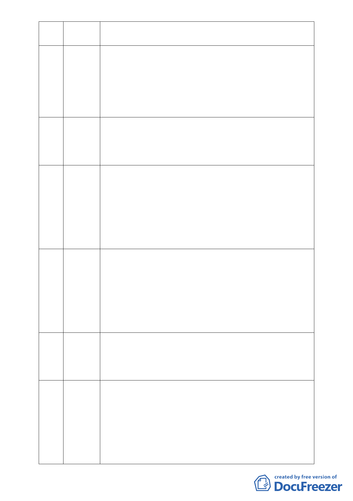

及急難救助中心之設置，故此開發案若交由慈濟來做，對社區也將
是ㄧ大保障。
5 黃文科 本人居住內湖達 30 年，現在擔任內湖區體育會理事長，體育會成員
除運動外也希望有心靈及人文的成長，許多成員也都有加入慈濟的
環保活動及心靈的成長課程，反應也都很好，唯一遺憾的是該地點
夏天很熱、下雨又影響上課，故受託於成員希望表達讓此園區能開
放合理的使用，也相信慈濟的用心和大愛，懇請委員能支持此開發
案。
6 鄭月英 有社區居民退休後精神失去依託得到憂鬱症，參加慈濟志工隊以
後，心開闊了又可參加讀書會，將好話帶給家人，原本吃憂鬱症的
藥現在也不用吃了，胃腹脹也好了，所以他很感謝慈濟有此園區，
更希望慈濟能設立志工中心，故請委員能支持本案。
7 謝秀連 本人為湖濱里居民也是慈濟環保義工，婆婆 90 歲亦患有老人憂鬱症
及厭世現象，帶她參加環保隊以後心情漸漸開朗起來，另有位阿媽
80 多歲不論颳風下雨也拄著拐杖搭公車來作環保，還有位阿媽為了
做環保甚至被狗咬還缝了好幾針，另有位廚師愛酗酒做環保以後救
了他自己也救了他的家庭，還有位吸毒者走投無路後到環保站也改
變了他，讓他找到自我，他太太也到環保站來致謝，希望本案能儘
速通過可以救更多的人。
8 張勝雄 本人設籍內湖並已居住 20 多年，幾年前因癌症的關係幾乎花光了所
有的積蓄，甚至有了結自己的念頭，幸好我生命中的貴人慈濟出現
安慰我並幫助我，也給了我人生的方向。慈濟在內湖彌補了政府礙
於法令沒有也做不到的區塊，有慈濟內湖園區不只是我個人的福氣
也是成千上萬人的福氣，實在沒有理由不支持他設立。況且大湖左
側坡地上已建有好幾棟 10 幾層的高樓，為何慈濟在平地上反而不能
開發興建。懇請委員認真思考並支持此案。
9 廖新樹 慈濟要開發詳細的細部計畫要提出來，包含地號、水溝施作、道路
開闢等均要明確提出，不能因慈濟低價購地後即採非法填土方式進
行變更與開發，周邊老農從祖先來台二百多年來依規定繳交農租地
稅，ㄧ直都無法開發變更，本案應公平對待才行。
10 吳淑梅 臺北市正朝向ㄧ個國際性城市在努力提昇國際形象與國際地位，惟
在此氣候變遷急遽的時代，內湖地區在經歷納莉、象神等颱風之後
所造成淹水的夢懨，是否在下一個莫拉克或梅姬颱風所造成之超級
雨量來臨之前，市府有何對策可以讓內湖地區的居民有免予淹水的
保證，慈濟開發案排除了之前的疑慮也給了我們一個安全與希望的
未來，且慈濟團體為一國際救難組織，未來會吸引更多的國外人士
前來學習與參訪，且此組織如此龐大，也想提出對內湖最大善意打
- 11 -